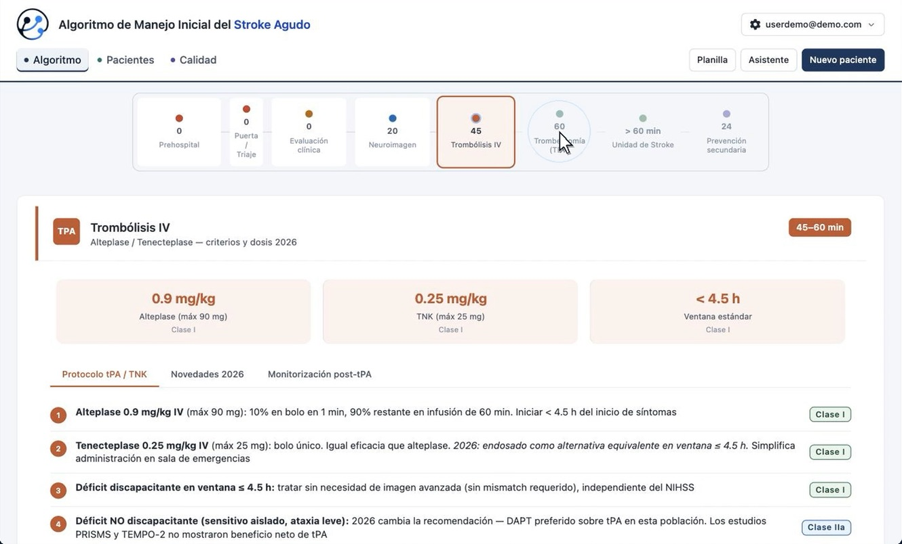

Decisión clínica guiada
Un asistente paso a paso, desde la sospecha hasta la conducta, con cada recomendación marcada por su clase de evidencia AHA/ASA 2026.
Basado en la guía AHA/ASA 2026
Algoritmo de manejo inicial del stroke agudo: decisión clínica guiada, registro estructurado e indicadores de calidad en una sola herramienta para tu unidad de ACV.
Para unidades de stroke, emergencias y equipos de neurología.
0
neuronas se habrían perdido en un ACV isquémico sin tratar desde que abriste esta página.
≈ 1,9 millones por minuto · Saver JL, “Time is brain — quantified”, Stroke 2006.
La solución
Un asistente paso a paso, desde la sospecha hasta la conducta, con cada recomendación marcada por su clase de evidencia AHA/ASA 2026.
La planilla del paciente se completa sola con las decisiones del asistente: tiempos, escalas, tratamientos y episodios, sin duplicar trabajo.
Tiempos puerta–aguja y puerta–punción medidos automáticamente e indicadores listos para auditoría de la Unidad de Stroke.
Recorrido
Ocho fases, de la escena prehospitalaria a la prevención secundaria, con metas de tiempo y pasos clave.

Mirá la demo
Video narrado en español.
El algoritmo
Para quién
Activación del código, NIHSS, contraindicaciones y criterios de trombólisis a un toque.
Indicaciones de trombectomía 2026, cuidados post-tratamiento y prevención secundaria con su evidencia.
Tiempos e indicadores por sede, listos para auditar, con los datos de cada organización aislados.
Nuestra misión
Que cada paciente con ACV reciba la mejor decisión posible, en el menor tiempo posible, sin importar dónde llegue.
Acercar la evidencia más actual al momento exacto en que se toma la decisión, para que la guía deje de ser un PDF y se convierta en acción.
Diseñamos junto a neurólogos y equipos de stroke herramientas simples, rápidas y medibles, que se adaptan al flujo real de cada hospital.
Solicitar demo
Contanos sobre tu equipo y coordinamos una demostración guiada con casos reales de uso.